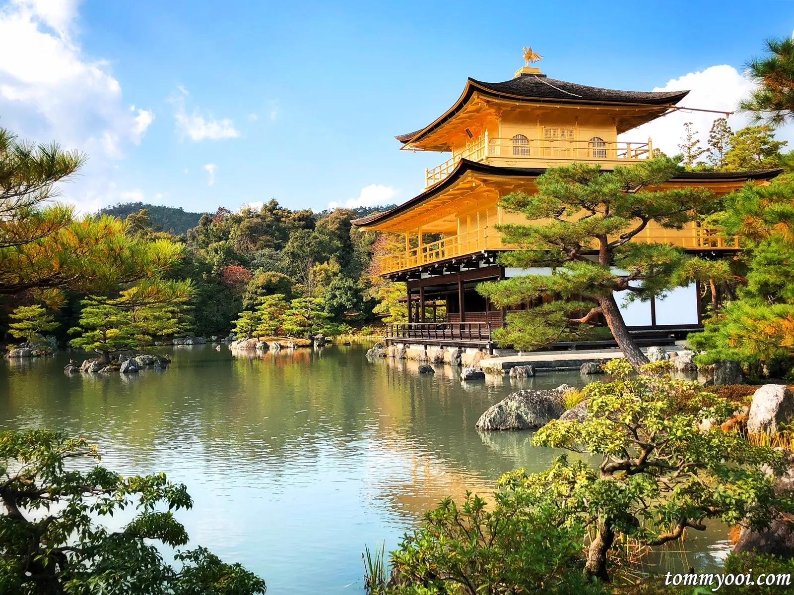
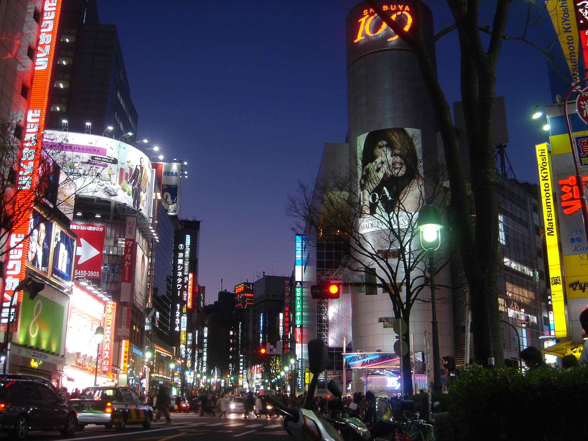

About Kyoto
Kyoto, Japan, is a city steeped in history, culture, and natural beauty. Often regarded as the cultural heart of Japan, Kyoto was the country’s capital for over a thousand years, from 794 to 1868, and it remains a symbol of Japan’s rich heritage and traditions.

Historical Significance
l Kyoto served as the capital of Japan for more than a millennium, during which time it became the center of Japanese culture, politics, and religion. Many of Japan’s most iconic temples, shrines, and palaces were built in Kyoto during this period. The city is home to numerous UNESCO World Heritage sites, making it a treasure trove of historical landmarks.
Temples and Shrine
Kyoto is home to iconic temples and shrines like Kinkaku-ji (Golden Pavilion), Fushimi Inari-taisha (with thousands of torii gates), and Kiyomizu-dera, which showcase traditional Japanese architecture and spiritual significance.

Garden and Nature
The city boasts beautiful gardens, including the Zen rock garden at Ryoan-ji and the serene Arashiyama Bamboo Grove, reflecting Japan’s deep connection to nature and minimalist design.

Kyoto's changing season's
Kyoto is renowned for its seasonal beauty: cherry blossoms in spring, vibrant autumn foliage, and serene winter landscapes, making it a year-round destination for nature lovers.

(Click the picture)
